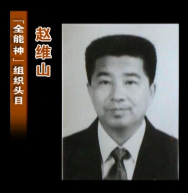
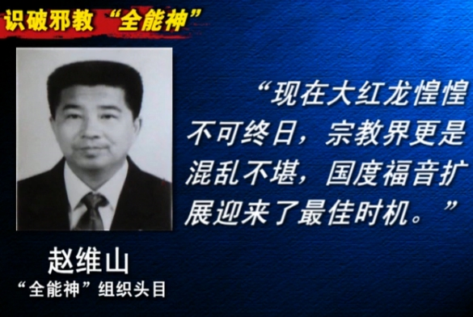
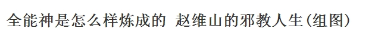

Conversation with 81184027 at Mon 31 Mar 2014 09:42:16 AM CST on 154115835 (webqq)
(09:51:20 AM) 光: stonesingsong 说: 最讨厌有些人张口就说中国就是怎样、西方就是怎样、国家就是怎样、百姓就是怎样、西南那种少数民族的地方就是…还喜欢拿这些去做论据跟人辩论… 没有什么“就是”怎样的，行动的单位都是具体的人，多样性随时随地都在，见识的高低直接表现在你做描述时是否客观措辞并意识到自己在这种多样性面前的局限
(09:57:17 AM) 光: stonesingsong 说: 我的同学正静坐在行政院外，高举“对独裁者礼貌就是对自己残忍”的标语，嘴里喊着“我们会继续坐下去直到你听懂人话”，最直接的原因，是她的同学被堵在里面据说身体状况堪忧。可是她忘了，是谁把他们堵在里面的，不是警察，是他们自己，和随后涌来的以为他们被欺负的人…
(09:59:24 AM) 光: stonesingsong 说: 自私或是人类社会最强有力的历史规律
(10:00:36 AM) 光: stonesingsong 说: http://img3.douban.com/view/status/median/public/087a5e41c11b55b.jpg http://img3.douban.com/view/status/median/public/38de6c549c666de.jpg “历史学尤其是现代的历史学，其实是一个智力的竞争，或者说是见识的竞争。而见识这个东西，第一，不会人人一样；第二，一种比较有深度的观察和比较有高度的认识，不是你一个人可以做出来的…很多时候一个人能做自以为很伟大的东西，其实并不是。”——刘志伟
(10:20:36 AM) 光: 我们的社会应该是一个即使是异端也能有自己发言和发展权利的时代，应该是一个个性和多元化同样被关注和尊重的时代，应该是一个能够对强加给自己的思想和价值观说不的时代，无论美国还是中国都应该如此，不同的是美国是现在时，而中国还是一个努力实现的将来时罢了。@《小的就是好的》
(10:56:05 AM) 阿萨汗蛋包飯: ?
(11:08:39 AM) 光: 自本人博客http://blog.sina.com.cn/s/blog_4b98e11301000ac8.html
转载请注明出处。
两枚戒指：从古各斯之戒到至尊魔戒
——力与道德之间，当如何抉择？
自从彼得·杰克逊将《魔戒》搬上银幕之后，在国内本不出名的托尔金一瞬间变得炙手可热。然而国内的《魔戒》迷似乎仅关注书及电影本身，而忽视了托尔金著作 中深厚的西方文化传统——这种传统恰好是《魔戒》的魅力之源头。如果不从深处挖掘，读者就很难完全灵悟小说的真谛。
一.魔戒的诱惑与僭政
无论是读过原著的读者，还是仅看过电影的观众，假使有人问起《魔戒》中给人印象最深刻的东西，大多都会回答是至尊魔戒，不但因为在第一部电影中林谷会议 时，导演安排给它的特写镜头，更因为它具备的强大力量与诱惑——能够使佩带者隐身、获得强大力量与不朽寿命（这一点在携带者身上均有暗示）。
柏拉图在《王制》中借“勇猛过人的格劳孔”之口讲述了古各斯指环的故事：牧羊人在大地裂出的深渊中发现了一枚宝石戒指，当他在同伴的会议中将宝石朝向自己 时，戒指使他隐身了。于是他凭借戒指的力量杀死国王，迎娶王后，成为新的僭主。格劳孔认定，如果正义与不义之人各戴一只这样的戒指，同时具有了“象全能的 神一样，随心所欲行动”的能力，两者的行为将不会有任何区别。这证明正义是勉强的，而人的本性在追逐不义，并且不义的生活才是真正可欲的。更重要的是，这 充分说明，当拥有无限力量时，道德律令的约束力就不复存在了——没有人会自愿追求正义。籍此，格劳孔认定真正善的生活乃是强而有力的僭主生活：道德的生活 乃是弱者的选择。
古鲁姆在获得至尊魔戒之后的表现于格劳孔所说的如出一辙，而且，由于长时间与至尊魔戒为伴，他从善良快乐的霍比特人变成了恐惧一切、灵魂沦丧的怪物。这似 乎说明了无节制的力量终将导致堕落，并且堕落会带来可怕的后果。但卑微的古鲁姆并不足以回应柏拉图——至少不足以使格劳孔满意。
真正的回应者是博罗米尔，因为他与格劳孔的高度相似：同样家世显赫，同样勇猛过人，更重要的是他们对力（Power）的高度渴望。苏格拉底看出格劳孔有成 为僭主的倾向；而博罗米尔的父亲身为摄政王却自称冈多君主，博罗米尔本人认定至尊魔戒是“敌人赠予的礼物”，他认定“无畏加无情便是胜利的法宝”更声称自 己作为“一个斗士，一个伟大的领袖”要越过阿拉贡，使用魔戒征服莫都，成为“八面威风的君王”——这一举动无疑将他自己作为僭主的特质暴露出来。为此他违 背了誓言，试图从弗拉多手里抢夺魔戒。诚然，这一举动出自魔戒的诱惑，在弗拉多戴上魔戒离去之后，他幡然悔悟，并为保护霍比特人梅利与皮平战死。尽管他的 死亡无愧于勇士的荣名，不过正因为其出众的血气，才使他更无法抵御诱惑。换言之，仅仅是对力的过度渴望就足以导致灵魂沦丧，使高贵的博罗米尔降格到与古鲁 姆同样的水平。
柏拉图在《卡尔米德》中让克里底亚说出了“节制就是认识你自己”——而“认识你自己”又与“勿过度”等同起来；尽管这个论点还是如前面的所有论点一样被苏 格拉底驳倒了，可我们不难发现，这里对节制的定义最接近于《王制》中的定义：对某些快乐和欲望的控制，灵魂（或城邦）较好的部分统治较坏的部分。正是依靠 节制这一品德，城邦方能和谐而正义的统治下去（尽管这种统治的可能性并不十分可靠）。而僭主生活正是以缺乏节制而著称——正如色诺芬和柏拉图都指出过的那 样——不论政治生活或是平常生活都是如此；同时，由于希腊城邦中神权与政权之间的高度同一性，僭主实质构成了对政治与宗教权威的双重破坏，一并侵犯了政治 与神权。在《王制》中，柏拉图则直指僭主生活为最可怕的命运时，他所表达的是对僭主灵魂沦丧的强烈斥责。
二.抵御诱惑与坚守自我
山姆、刚多尔夫与盖拉德丽尔都很明确的拒绝了戒指的诱惑——魔戒的力量对老邦巴迪尔则压根儿无效。后三位均拥有无限的寿命，这似乎意味着不朽者能够拒绝魔戒：这对于有死的凡人而言绝对算不上什么好消息，因为人不可能不朽。
真正值得参考的是山姆，因为他不但体会到了诱惑，更亲自携带过魔戒本身——他以为弗拉多已然丧生，就接过了主人的任务，而当他发现主人没死时，就很自然的 放弃了魔戒去拯救主人，他的宣言是：“我成不了戒指的携带人。我不能没有弗拉多老爷。”而当他面对末日火山时，戒指的力量愈加强大，在他面前展现出幻象： 他成了“英武的山姆王，手握耀眼的宝剑，阔步走过黑暗之地，征讨魔都的军队齐集他的麾下”；并且魔戒非常清楚他的爱好，使他在这幻象里看到，在他统治之下 高格罗斯谷成为了美丽的花园——这一切的实现，只需要山姆带上戒指而已。但是山姆拒绝了这一点，他非常清楚他自己不过是霞尔的一名园丁，唯一需要的不过是 一个属于自己的小小花园，依靠的也不过是自己的双手。山姆抵挡了诱惑，是因为他对主人的爱，更因为他对自己有清醒的认识，明了自己的本性。
相比之下，即使是魔戒携带者弗拉多也没有完全抵御魔戒的力量，全书中弗拉多不止一次的戴上了魔戒，而其中包含着完全不同的意义：在布雷跃马客栈是无心之 举，而面对五名戒灵时是出于戒指的诱惑，但当他站在末日火山口时却是自己戴上了魔戒，并且宣称：“我来了，但是我不愿现在就完成使命。魔戒是属于我的！” 在这三次中，第一次大概可以推脱给魔戒或是命运，第二次也并非出于弗拉多的意志，然而最后一次则是他自己的选择。在使命即将结束的时候，弗拉多抛弃了甘道 尔夫的告诫与自己的经验：他不再相信销毁戒指能够拯救中土世界，也不再相信这一举动将导致可怕的后果——在此时他并未想起古鲁姆与博罗米尔；并且长期以来 他一直认定自己将在这次旅行中失去生命，在最后的时刻，他相信戴上魔戒可以使他免于死亡。
尽管弗拉多的这一举动也足以动摇黑塔楼中的索隆统治，但也不过是以一个新的僭主弗拉多取而代之罢了。这一点完全照应了柏拉图的论断：使人超越道德规约的力 引发灵魂的堕落与心志的沦丧。对比同为霍比特人的弗拉多与山姆，并不难得出结论：抵御堕落的唯一途径是节制、保持自我，拒绝一切不属于自己的力量。也就是 说，为了避免灵魂沦丧的痛苦，就必须遵循正义。在柏拉图而言，这一点确实可以实现——通过对自己生活的抉择实现。
三.正义——灵魂的抉择
柏拉图在《王制》结尾处精心安排了宏大的轮回神话：包含全宇宙的天穹在死者的灵魂面前呈现，而推动天穹运动的纺锤就在“必然”膝上，灵魂走向命运三女神 ——“必然”的女儿。在传统希腊神话里，人的命运由这三位女神决定，而在这里它们仅仅肯定着人类的自由选择：“不是神决定你们的命运，是你们自己选择命 运……每个人将来有多少美德，全看他对它重视到什么程度，过错由选择者自己负责，与神无涉。”
托尔金在《魔戒》中并未否定命运——即“必然”——的存在：比如古鲁姆对销毁魔戒的决定性作用，但“必然”也并非所谓的“前定和谐”：古鲁姆之所以能在最 后关头帮助摧毁魔戒，是因为毕尔博与刚多尔夫留下它的生命，弗拉多在法拉米尔面前拯救了它——也就是说，“必然”发挥作用依赖于人的抉择；也正因为“必 然”存在，人的自由才获得意义。
于是，面对力时的一切举措最终都将指向自身而非命运或者魔戒，正因如此，这一选择才更沉重：究竟是为强大的力量而付出灵魂的代价，还是坚守正义做真正的自 我？无论在柏拉图还是托尔金看来，这是人能遇到的最关键而且最危险的抉择。2400多年以前，柏拉图证明了无限的力只能带来无限的不幸，而人能够通过对正 义与智慧的追求拒斥无限的力量以及它带来的灵魂沦丧。托尔金则以全部关于魔戒的故事证明了这一点：在故事中，每个与魔戒发生关联的人都面对着戒指的诱惑， 而他们也都作出了自己的选择，但在这之中，只有走向正义的人才能成为他们自己。人必须紧紧守住灵魂的本性，贪图任何不属于自己的力量，都会把自己的人生导 入歧途。所以人们不妨时刻紧记《王制》结尾处的教诲：“让我们永远走向上之路，追求正义和智慧。这样我们才可以得到我们自己的和神的爱，无论今生现世，还 是去赴我们描述过的千年之旅，我们都将诸事顺遂。”
(11:36:59 AM) 光: 占有还是生存——关于弗洛姆、安徒生的凌乱随想
2009-02-25 21:36:28 来自: 锅子
占有还是生存的评论 5 star rating5 star rating5 star rating5 star rating5 star rating 5
这本书的扉页上写着我买下的时间与地点：1995年1月14日，三联书店。从书架上取下开始读则是这几天的事——十三年中我判若两人，是“他”买给“我”读的书了。然后却读得兴奋，读到了很多似乎是最近才关注的新问题，与很多文章与思考有着呼应。
弗洛姆提到了教育批评者伊凡•伊里奇(Ivan Illich)——伊里奇的书一定好看，可惜只有一本《非学校化社会》译成中文，台湾桂冠图书公司94年的译本，早已绝版，经弗洛姆的提醒，再去一搜，竟然有售，于是就订到了一本；
对亚当与夏娃的分析中，弗洛姆提到了男女是一体（“当时夫妻二人，赤露身体，并不羞耻”（创世纪2.24）……在一个更深的层次上，这句话也包括着这样一个内容：虽然男女一丝不挂地站在一起，但他们并不觉得羞耻。他们之所以能不觉得羞耻，是因为他们彼此都不觉得对方是陌生的和互相隔离的个人，因为他们是“一体”。）——午后的水妖前几天刚写了篇文章叫《雌雄同体》，真巧；
关于“地狱”的定义（人与人之间没有爱的桥梁、彼此完全分离和异化这种生存形式称做是“地狱”。这种状态是无法忍受的……只有一种办法能拯救我们，使我们免受地狱之苦，这就是从自我中心的禁锢中挣脱出来，伸出手，“与世界结为一体”。）——泥土大哥一定喜欢这些句子，因为与帕尔默《教学勇气》说的是同一个主题。
谈人的心灵（只有人的心灵发生了深刻的变化，也就是说，人们现在所追求的东西为一个崭新的目标所取代，新社会才可能出现。）——阿啃常提“以观念战胜观念”，也就是一点一滴地改变我们的心灵。
弗洛姆讲对生物的占有（在子女尚未长大之前，母亲也是其子女的占有者。这是一种恶的循环：丈夫剥削妻子，被剥削的妻子又剥削自己的孩子，而成年的男孩子又加入父亲的行列，转过来剥削妇女。）——最近在读苏教版的小学教材，发现里面有不少彼此占有生命，要求利益交换的糟糕文本。
还提到了写了《小的是美好的》舒马赫、耶路撒冷的艾希曼、史怀泽……都是值得关注的人物。
正如书名，弗洛姆区分了这两种不同形式的个人体验、生存方式、社会性格：占有（to have）和生存（to be）。重占有的生存方式的基础是以利润为取向的社会，而占有观念的实质是：物物，也物于物——占有者和占有物都成为了物，两者之间的关系是死的、没有生命力的。弗洛姆说：“看起来，我好像拥有一切，实际上一无所有，因为我所有的，所占有的和所统治的对象都是生命过程中暂时的瞬间。”
而重生存的先决条件就是独立、自由和具有批判的理性，特征是积极主动地生存。“这种主动性说的不是那种外在的、身体的活动，不是忙忙碌碌，而是内心的活动，是创造性地运用人的力量。”在奉献与分享中，在发挥主动权与承担一定的责任的创造性活动中，快乐就随之产生了。
占有还是生存，是赏析安徒生《老头子做事总不会错》的最佳角度。
“老头子，你知道得最清楚呀，”老太婆说。“今天镇上是集日，你骑着它到城里去，把这匹马卖点钱出来，或者交换一点什么好东西：你做的事总不会错的。快到集上去吧。”
一匹马对于清贫的人家，本是贵重的财产，但老两口视之淡然，没有执着与贪恋。老头子被赋予了全部的信任，他本着爱与责任，去进行交换。每一次交换，都创造了快乐。正如弗洛姆所说：“快乐不是极度兴奋，不是瞬时即熄的火焰，而是生存本身所具有的持久的炽热。”
安徒生的作品，是通往《圣经》的最佳途径。《旧约》与《新约》，都把快乐视为生存的基本，《诗篇》以恐惧和悲哀开始，在赞美、鼓瑟、弹琴的快乐歌声中结尾；安息日是快乐之日；在弥撒亚时代整个世界将充满快乐；“福音”的本义是令人愉快的消息，称谓本身就包含了快乐之意，《马太福音》有藏宝于田与寻珠的比喻：“天国好像宝贝藏在地里，人遇见了就把它藏起来，欢欢喜喜地变卖一切所有的，买这块地。天国又好像买卖人寻找好珠子，遇见一颗重价的珠子，就去变卖他一切所有的，买了这棵珠子。”——这描述的，不就是安徒生笔下那对老头老太的生活态度吗？而抱住财产不放的，注定是悲哀的，贪财的难进天国。充满仁慈之心的安徒生，甚至让他笔下精于计算的那两个英国人，都乐于在输了的打赌中，痛痛快快地付给这个种田人112镑金子，并且齐声说：“我喜欢看这幅情景！老是走下坡路，而却老是快乐。这件事本身就值钱。”
快乐是善，伤感是恶；快乐即道德，伤感是罪恶。国民性的自我反省中，怎可缺失了对随民族性格而来的“抑郁多愁”的警惕呢？在这个意义上，我们要慎选那些古典诗词。
弗洛姆说：“快乐就是我们在通向实现自我这一目标的道路上所获得的体验。”老头子和老太婆，用他们实际的言行，向读者指出了如何从“占有”走向“生存”的道路。
《占有还是生存》，埃里希•弗洛姆，关山 译，三联书店，1992年6月
(11:37:26 AM) 光: http://book.douban.com/review/1737496/
(11:37:58 AM) 阿萨汗蛋包飯: 移舟泊烟渚，日暮客愁新。
野旷天低树，江清月近人。
(11:38:21 AM) 光: 只有人的心灵发生了深刻的变化，也就是说，人们现在所追求的东西为一个崭新的目标所取代，新社会才可能出现。
(11:42:11 AM) 光: 重占有的生存方式的基础是以利润为取向的社会，而占有观念的实质是：物物，也物于物——占有者和占有物都成为了物，两者之间的关系是死的、没有生命力的。弗洛姆说：“看起来，我好像拥有一切，实际上一无所有，因为我所有的，所占有的和所统治的对象都是生命过程中暂时的瞬间。”
(11:42:19 AM) 光: 而重生存的先决条件就是独立、自由和具有批判的理性，特征是积极主动地生存。“这种主动性说的不是那种外在的、身体的活动，不是忙忙碌碌，而是内心的活动，是创造性地运用人的力量。”在奉献与分享中，在发挥主动权与承担一定的责任的创造性活动中，快乐就随之产生了。
(11:42:39 AM) 埃及无雪:
(11:42:47 AM) 埃及无雪: 这花海多漂亮啊
(11:42:58 AM) 光: 嗯
(11:43:02 AM) 光: 确实不错
(11:43:11 AM) 埃及无雪: 大家出去走走，看看当地有什么漂亮的花海啊
(11:43:15 AM) 埃及无雪: :D
(11:43:28 AM) 光: :face14:
(11:43:32 AM) 埃及无雪: 上海的应该也很漂亮啊
(11:43:38 AM) 埃及无雪: :)
(11:43:45 AM) 光: 嗯
(11:43:54 AM) 光: 每天都能看到很多鲜花
(11:43:52 AM) 埃及无雪: 这个图片是重庆涪陵这边的
(11:44:00 AM) 阿萨汗蛋包飯: :wink:樱花.
(11:44:10 AM) 光: 不过我的心思似乎都不在花上
(11:44:10 AM) 埃及无雪: 哦，那估计是温室的花啊
(11:44:24 AM) 埃及无雪: 樱花很漂亮啊
(11:44:42 AM) 埃及无雪: 我看了一部日剧，里面的樱花美翻了
(11:44:43 AM) 阿萨汗蛋包飯: :-D
(11:44:52 AM) 埃及无雪: 太美了
(11:44:58 AM) 光: :face14:
(11:45:28 AM) 光: 我对人造的景观，往往无感
(11:45:36 AM) 阿萨汗蛋包飯: 天街小雨润如酥，草色遥看近却无。最是一年春好处，绝胜烟柳满皇都。
(11:46:00 AM) 光: 只有真正天然的景观，会震撼到我的心灵
(11:46:04 AM) 埃及无雪: 是啊
(11:46:12 AM) 光: 嗯
(11:46:49 AM) 光: 可能我还不够智慧
(11:46:55 AM) 光: 不能小中见大
(11:47:04 AM) 光: 过于挑剔了
(11:47:37 AM) 埃及无雪: 东野圭吾3周连续特别篇 第1集
开头几分钟，大家看看，樱花特美
(11:47:52 AM) 光: 嗯
(11:48:06 AM) 埃及无雪: 我当时看傻了，被那个樱花的景色迷住了
(11:48:15 AM) 阿萨汗蛋包飯: :D:face64:
(11:48:22 AM) 埃及无雪: 但是美景不多，就几分钟
(11:48:36 AM) 埃及无雪: 大家快看看，好美的
(11:48:51 AM) 埃及无雪: 要是中国也有这么漂亮的就好了
(11:49:02 AM) 光: 武汉大学
(11:49:08 AM) 光: 应该也有
(11:50:18 AM) 埃及无雪: 恩，中国感觉是刻意为之，但我的感觉是那部片子就是咖啡馆的一角，好多樱花
(11:50:26 AM) 埃及无雪: 是很随意的感觉
(11:50:46 AM) 埃及无雪: 中国的感觉大部分是载一大片，专门吸引游客的
(11:50:59 AM) 光: https://www.google.com.hk/search?q=%E6%AD%A6%E6%B1%89%E5%A4%A7%E5%AD%A6+%E6%A8%B1%E8%8A%B1&newwindow=1&tbm=isch&tbo=u&source=univ&sa=X&ei=8uU4U9adDOK5iQek-IEI&ved=0CDQQ7Ak&biw=1916&bih=542
(11:51:03 AM) 埃及无雪: 缺少点随意美:D
(11:53:34 AM) 光: ：）
(11:54:03 AM) 光: 武大的樱花和日本人有关系的
(11:54:17 AM) 光: 武漢大學在抗日戰爭期間被日軍佔用作為傷兵修養地。1939年前後，為了緩解他們的思鄉之情，並炫耀武功和表現長期佔領的意圖，侵華日軍從日本引來櫻花樹苗不超過30株在武漢大學校園今天的櫻花大道上兩側種植。
(11:54:34 AM) 光: 1950年代起，當年日軍種植的櫻花樹的生命周期逐漸結束，陸續枯死。 1972年中日邦交正常化的時候時任日本首相的田中角榮向中國總理周恩來贈送了大山櫻1000株，後者將其中50株轉贈武漢大學。 1982年紀念中日友好10周年，日本友協和日本西陣織株式會社贈送了100株垂枝櫻苗栽培於武漢大學。 1992年紀念中日友好20周年，日本廣島中國株式會社內中國湖北朋友會砂田壽夫贈送櫻苗200株。 這些中日邦交正常化後獲贈的櫻花是目前武漢大學櫻花的主要來源。
(12:39:47 PM) 埃及无雪: 哦，原来这样啊，挺有意思的
(12:43:24 PM) 河北-邯郸&格调: MSG啥意思
(12:44:34 PM) 河北-邯郸&格调: 光
(12:44:54 PM) 光: 不知道
(12:45:10 PM) 光: 好像就我有
(12:45:16 PM) 光: 你们没有这种待遇
(12:46:26 PM) 河北-邯郸&格调: MSG啥意思？
(12:46:43 PM) 光: 就是离线信息
(12:46:33 PM) 河北-邯郸&格调: 光
(12:47:20 PM) 光: 你没有上线前我的聊天记录，你那边显示为MSG
(12:47:36 PM) 光: 我本来以为大家都是这样
(12:47:45 PM) 光: 后来发现就我有这样的情况
(12:47:45 PM) 河北-邯郸&格调: 弄个这个干吗
(12:47:56 PM) 光: 不知道
(12:48:01 PM) 河北-邯郸&格调: 看看你的聊天记录都不能
(12:48:20 PM) 河北-邯郸&格调: 整的自己跟个特务似得
(12:48:36 PM) 光: 是腾讯的问题
(12:48:33 PM) 河北-邯郸&格调: :dig:
(12:48:44 PM) 光: 不是我的问题啊
(12:49:05 PM) 河北-邯郸&格调: 从新设置一下吧
(12:49:20 PM) 光: 怎么设置啊
(12:49:29 PM) 光: 服务器那边的
(12:50:06 PM) 河北-邯郸&格调: 难道是美国搞的鬼
(12:50:16 PM) 光: 不是
(12:50:33 PM) 光: 之前和灭神辩论之后
(12:50:37 PM) 光: 被举报两次
(12:50:42 PM) 光: 说有不良信息
(12:51:00 PM) 光: 后来就这样了
(12:51:19 PM) 河北-邯郸&格调: 他们怎么就说你是卧底了？
(12:51:39 PM) 光: 贼喊捉贼呗
(12:51:41 PM) 河北-邯郸&格调: 我也被踢出群了
(12:52:06 PM) 河北-邯郸&格调: 就那次你们说话，我插了句嘴，结果被踢了
(12:52:14 PM) 光: 哪次他们说的拿出证据了
(12:52:23 PM) 光: 还不是一直在这样造谣
(12:52:26 PM) 河北-邯郸&格调: 拿什么证据？
(12:52:33 PM) 光: 但是有人信
(12:52:33 PM) 河北-邯郸&格调: 抓住你什么证据了
(12:52:39 PM) 光: 信的人还不少
(12:52:45 PM) 光: 没有任何证据
(12:52:53 PM) 光: 就是诬陷
(12:53:18 PM) 河北-邯郸&格调: 你和他们有过节？
(12:53:26 PM) 光: 有吧
(12:53:35 PM) 光: 因为他们抄袭我的
(12:53:45 PM) 光: 如果这算是过节的话
(12:54:01 PM) 河北-邯郸&格调: 我记得他们好像让你说全能狗，你不说
(12:54:16 PM) 光: 嗯
(12:54:20 PM) 光: 我不骂人的
(12:54:23 PM) 光: 只讲理
(12:54:23 PM) 河北-邯郸&格调: 你为啥不说啊
(12:54:35 PM) 光: 没有骂人的习惯
(12:54:50 PM) 光: 有理讲理，没必要骂人
(12:54:47 PM) 河北-邯郸&格调: 怨不了踢你
(12:55:07 PM) 光: 联盟是靠造假起家的
(12:55:07 PM) 河北-邯郸&格调: 它不是人，该骂的
(12:55:12 PM) 光: 你加入的晚
(12:55:16 PM) 光: 很多事情你不知道
(12:55:20 PM) 河北-邯郸&格调: 哦
(12:55:29 PM) 光: 做见不得光的事情起家的人
(12:55:34 PM) 光: 最怕被揭底了
(12:55:42 PM) 光: 你懂的
(12:55:46 PM) 河北-邯郸&格调: 具体说说，
(12:55:54 PM) 河北-邯郸&格调: 还是不大明白
(12:56:11 PM) 光: 上次聊天你有在的话
(12:56:17 PM) 光: 几个典型的问题我都说了
(12:56:13 PM) 河北-邯郸&格调: 可能以前的事我不知道吧
(12:56:33 PM) 光: 我和灭神辩论
(12:56:40 PM) 光: 如果那算辩论的话
(12:56:55 PM) 光: 我在讲理，他在不停的骂人
(12:56:51 PM) 河北-邯郸&格调: 我知道你们辩论的有两次
(12:56:58 PM) 河北-邯郸&格调: 是
(12:57:06 PM) 光: 嗯
(12:57:10 PM) 河北-邯郸&格调: 那次他确实不对
(12:57:19 PM) 光: 一直这样的
(12:57:18 PM) 河北-邯郸&格调: 我都听不下去了
(12:57:25 PM) 光: 不是那次
(12:57:55 PM) 光: 这里不少网友都亲眼见识过
(12:57:52 PM) 河北-邯郸&格调: 那个群里的人脾气都挺大
(12:58:04 PM) 河北-邯郸&格调: 他们什么目的
(12:58:20 PM) 光: 以谎言起家
(12:58:28 PM) 光: 目的何在
(12:58:43 PM) 河北-邯郸&格调: 就是啊，到底什么目的？
(12:59:09 PM) 光: 联盟是我09年创立的
(12:59:26 PM) 光: 这个群，是当年的联盟的编外群
(12:59:07 PM) 河北-邯郸&格调: 不会是狗教的卧底网吧？
(12:59:15 PM) 河北-邯郸&格调: 我看不像
(12:59:32 PM) 光: 也是09年创立的
(12:59:44 PM) 光: 储备心理咨询师人才
(01:00:16 PM) 光: 编外群，我是没有放在计划里面
(01:00:21 PM) 光: 另外在搞的
(01:00:32 PM) 河北-邯郸&格调: 那你为啥不在联盟群了又？
(01:00:48 PM) 光: 说来话长了
(01:01:13 PM) 光: 应该是清理群里的东方闪电卧底失败吧
(01:02:04 PM) 河北-邯郸&格调: 你说灭神他们是卧底吗
(01:02:17 PM) 光: 而这股力量一直存在
(01:02:50 PM) 光: 问题很多
(01:02:53 PM) 光: 疑点很多
(01:03:42 PM) 光: 他们早期推出的噱头都是人为造假的
(01:04:15 PM) 光: 成立时间正好也是12年12月21日之前几个月
(01:04:22 PM) 河北-邯郸&格调: 联盟网现在谁是站长？
(01:04:37 PM) 光: 最初
(01:04:50 PM) 光: 联盟那边是靠多ID来搞的
(01:04:55 PM) 光: 一个用户有多个ID
(01:05:06 PM) 光: 制造一个多数
(01:05:40 PM) 光: 你知道逆淘汰
(01:05:41 PM) 光: 么
(01:05:54 PM) 河北-邯郸&格调: 不知道
(01:06:13 PM) 光: 劣币驱逐良币
(01:06:22 PM) 光: 这个说法听过么
(01:06:27 PM) 河北-邯郸&格调: 听过
(01:06:35 PM) 光: 嗯
(01:06:38 PM) 光: 原理差不多
(01:07:47 PM) 光: 当吸引了足够的人气
(01:07:56 PM) 光: 也就吸引了媒体的注意
(01:08:31 PM) 光: 媒体关于赵维山是物理老师的谣言就是从他们那里传出来的
(01:08:53 PM) 光: 而在那个阶段
(01:09:13 PM) 光: 这个联盟人数激增了500多
(01:10:20 PM) 光: 中国人缺乏理性和逻辑性，怀疑精神也同样缺乏
(01:10:39 PM) 光: 再加上受害者家属病急乱投医
(01:11:21 PM) 光: 百度又对信息把关不强
(01:12:12 PM) 光: 很多人就变成这个假联盟的推销广告的业务员了（免费）
(01:12:41 PM) 光: 大体上也是这么一个 造谣 信谣 传谣 的过程
(01:12:40 PM) 河北-邯郸&格调: 你觉得联盟发展到最后会是个什么结果？
(01:12:56 PM) 光: 要看动机
(01:13:04 PM) 光: 造假是事实
(01:13:07 PM) 光: 动机是什么
(01:13:22 PM) 河北-邯郸&格调: 动机是扩大影响力
(01:13:46 PM) 光: 很多黑社会成员都有双重身份的
(01:13:48 PM) 河北-邯郸&格调: 如果真能引起政府关注，我觉的这个动机是好的
(01:14:03 PM) 光: 嗯
(01:14:11 PM) 光: 你的观点代表大多数人的观点
(01:14:42 PM) 光: 第一，你们认为是政府不够重视导致了现在这样的一个问题
(01:15:09 PM) 光: 第二，你们相信政府出手，问题就很容易被解决了，全知全能型政府
(01:15:37 PM) 光: 那么，我们来分析一下这个观点是否正确
(01:15:59 PM) 光: 政府是否不够重视这个问题呢？
(01:16:30 PM) 光: 政府是否能够解决这个问题呢，能，为什么，怎么解决，不能，为什么？
(01:23:09 PM) 河北-邯郸&格调: 为什么？
(01:23:39 PM) 光: 意大利作家卡爾維諾寫道：「在一個人人都偷竊的國家裡，唯一不去偷竊的人就會成為眾矢之的，成為被攻擊的目標。因為在羊群中出現了一隻黑羊，這隻黑羊就是「另類」，一定會被驅逐出去。」
(01:24:15 PM) 光: 是啊
(01:24:18 PM) 光: 为什么呢
(01:25:42 PM) 河北-邯郸&格调: 你怎么看这个问题
(01:26:08 PM) 光: 政府是否不够重视这个问题呢？
(01:26:14 PM) 光: 先谈这个问题吧
(01:26:15 PM) 河北-邯郸&格调: 感觉不是
(01:26:31 PM) 光: 嗯
(01:26:46 PM) 光: 你从哪些方面感觉到政府不重视东方闪电的问题呢
(01:27:08 PM) 光: 1.国保的态度，公安的态度
(01:27:21 PM) 光: 2.媒体的新闻爆光程度
(01:27:41 PM) 光: 3,周围人的经历和对政府的评价
(01:31:51 PM) 河北-邯郸&格调: 从这些上看确实证明国家不够重视
(01:31:59 PM) 河北-邯郸&格调: 但我现在感觉不是
(01:32:06 PM) 光: 嗯
(01:32:15 PM) 光: 你现在的感觉是怎样的
(01:32:24 PM) 阿萨汗蛋包飯: 国家以经济建设为中心。
(01:32:33 PM) 河北-邯郸&格调: 感觉事情没那么简单
(01:32:42 PM) 光: 嗯
(01:35:19 PM) 河北-邯郸&格调: 你的思路不错，
(01:35:50 PM) 光: ：）
(01:36:05 PM) 光: 我有独立思考的习惯
(01:36:09 PM) 河北-邯郸&格调: 方法最起码是现在最切实可行的
(01:36:26 PM) 阿萨汗蛋包飯: :coffee:
(01:36:36 PM) 光: 任何信息入脑之前都要反复推敲
(01:37:04 PM) 光: 知其然，更要知其所以然
(01:38:53 PM) 河北-邯郸&格调: 可是这是个慢性病，需要的是时间
(01:39:58 PM) 光: 没关系的
(01:40:05 PM) 光: 你可以把我的问题多想想
(01:40:16 PM) 阿萨汗蛋包飯: 赵维山就一呼喊派的
(01:40:21 PM) 光: 得出你自己的答案
(01:40:20 PM) 河北-邯郸&格调: 想过
(01:40:31 PM) 河北-邯郸&格调: 以前一直再想
(01:40:36 PM) 光: 我不习惯代替别人思考
(01:40:48 PM) 光: 只会提出我的基本建议
(01:40:56 PM) 阿萨汗蛋包飯: 曾“呼喊派”的骨干，因与“呼喊派”中的同党不和而退出
(01:41:04 PM) 光: 思考部分应该由每个人自己提出
(01:41:08 PM) 光: 完成
(01:41:22 PM) 光: 思考部分应该由每个人自己独立完成
(01:41:27 PM) 阿萨汗蛋包飯:
(01:41:38 PM) 光: 假的
(01:41:47 PM) 阿萨汗蛋包飯: 
(01:41:56 PM) 光: 真的
(01:42:27 PM) 阿萨汗蛋包飯: 
(01:43:09 PM) 光: 前面那个就是联盟推出的赵维山——物理老师
(01:43:16 PM) 光: 去参加世博会
(01:43:34 PM) 阿萨汗蛋包飯: 他曾经是一名铁路工人，而非之前媒体报道过的物理老师
(01:43:42 PM) 光: 后者是凯风网推出的吧，或者是记者亲自实地采访的
(01:44:00 PM) 光: 媒体为什么为报道是物理老师呢
(01:44:04 PM) 光: 会
(01:44:05 PM) 阿萨汗蛋包飯: 他懂音乐，会识谱，还写得一手漂亮的毛笔字。
(01:44:25 PM) 光: 很简单
(01:44:23 PM) 阿萨汗蛋包飯: 37岁之后，他却成了许多教众眼中的“能力主”，是“神的化身”。而后几经变化，他又成了“女基督”选中的大祭司。
(01:44:33 PM) 光: 采访了联盟的群主
(01:44:30 PM) 河北-邯郸&格调: 为啥
(01:44:38 PM) 河北-邯郸&格调: 哈哈
(01:44:46 PM) 光: ：）
(01:45:06 PM) 阿萨汗蛋包飯: 1951年12月12日，一个叫赵坤的男孩就诞生在火车站附近的铁路工人家属区。这个人后来改名叫做赵维山
(01:45:21 PM) 光: 很荒唐，但是是他们起家的本钱
(01:45:38 PM) 阿萨汗蛋包飯: 赵维山的父亲赵广发也是铁路工人，母亲在铁路上的装卸队工作。
(01:45:51 PM) 光: 嗯
(01:46:14 PM) 阿萨汗蛋包飯: 小时候的赵维山是个不太爱和大家一起玩的人。“孩子群里很难看见他”。
15岁那年，赵维山正好赶上文化大革命开始，他还当过一阵子红卫兵 。赵维山只有初中文化程度，据当地中学的老师介绍，他“学习不好，很淘”。
(01:46:36 PM) 光: 嗯
(01:47:02 PM) 河北-邯郸&格调: 赵维山的过去我不太感兴趣，我感兴趣的是如果以咱们的睿智来击败邪教
(01:47:16 PM) 河北-邯郸&格调: 如何
(01:47:16 PM) 阿萨汗蛋包飯: 这人就怕出名。媒体相关报道很详细
(01:47:44 PM) 光: 应该是半岛记者去采访的吧
(01:47:59 PM) 光: 南方周末的记者就很水了
(01:48:05 PM) 光: 提到我的退教参考手册
(01:48:14 PM) 光: 但是连我的人都没聊过
(01:48:16 PM) 阿萨汗蛋包飯: 哇了个擦，原来是个木匠
(01:48:27 PM) 光: 就有结论了
(01:48:27 PM) 阿萨汗蛋包飯: 耶稣也是木匠之子
(01:48:40 PM) 光: 嗯
(01:48:46 PM) 光: 赵维山学过木匠
(01:49:03 PM) 阿萨汗蛋包飯: 上世纪70年代末，赵维山开始信仰基督教。在信基督教之前，他还信过佛教和天主教，后来他自己说：“感觉佛教和天主教都不如基督教好，所以就信了基督教。”
(01:49:44 PM) 光: 嗯
(01:49:57 PM) 阿萨汗蛋包飯: 赵庆芳在阿城宗教局工作，又是赵维山的亚沟老乡，和他接触比较多，对他比较了解。“哪个厂子效益不好，他就去哪个，这样就有空闲时间来传教了。”
(01:50:22 PM) 光: 嗯
(01:50:36 PM) 光: 了解真相其实不难
(01:50:32 PM) 阿萨汗蛋包飯: 此人个儿矮点，还不到一米六。
(01:50:44 PM) 光: 实地去第一线采访就行
(01:50:57 PM) 光: 如果偷懒，急于求功
(01:51:07 PM) 光: 就会像南方周末的记者一样
(01:51:08 PM) 河北-邯郸&格调: 你信过教？
(01:51:10 PM) 阿萨汗蛋包飯: 是啊，记者写的非常详细，连他住的房子都去采访过了
(01:51:14 PM) 光: 买了一个假瓜
(01:51:16 PM) 河北-邯郸&格调: 光
(01:51:34 PM) 光: 我都接触过
(01:51:57 PM) 阿萨汗蛋包飯: 他唱歌很好听，还识谱，在基督徒聚会时，他负责教大家唱圣歌。齐艳记得，每次他教唱歌，赵维山就会提前把歌词用毛笔抄到报纸上，挂在墙上。
(01:52:04 PM) 河北-邯郸&格调: 不如咱们一起写本书吧
(01:52:15 PM) 光: 嗯
(01:52:51 PM) 河北-邯郸&格调: 内容是揭穿他们的没句谎言
(01:52:38 PM) 阿萨汗蛋包飯: 
(01:53:13 PM) 光: 嗯
(01:53:30 PM) 光: 这篇文章你知道怎么出来的么
(01:53:49 PM) 光: 当年，半岛都市报的记者来采访我
(01:53:47 PM) 河北-邯郸&格调: 大概有点思路
(01:53:57 PM) 光: 被我训了一顿
(01:54:09 PM) 光: 后来他们去实地采访的
(01:54:27 PM) 光: 大多数人都比较懒
(01:54:35 PM) 光: 不愿意去做实地采访
(01:55:25 PM) 光: 就像那个南方周末的记者一样
(01:55:34 PM) 光: 最后难免以讹传讹
(01:55:43 PM) 阿萨汗蛋包飯: 他回到老家亚沟，见到他父母的尸体，并没有哭，甚至还有些高兴。当时，他拿了一个红色的十字架，放在了他父亲的身上，祷告了一会儿。
(02:05:52 PM) 光: (01:54:35 PM) 光: 不愿意去做实地采访的记者，其实不如改行写小说
(02:06:31 PM) 光: 小说三分事实就可以凭想象去写了
(02:06:42 PM) 河北-邯郸&格调: 真相往往难求
(02:06:52 PM) 光: 所以我在质疑中国的教育
(02:07:05 PM) 光: 到底培养了怎样的专业人才
(02:07:19 PM) 光: 新闻的可信度有多高
(02:08:03 PM) 河北-邯郸&格调: 记者也都是哗众却宠罢了
(02:08:39 PM) 河北-邯郸&格调: 被社会腐烂了
(02:08:58 PM) 光: 低成本，赶工期
(02:08:55 PM) 阿萨汗蛋包飯: 嗯，真相只有卧底才知道
(02:09:00 PM) 阿萨汗蛋包飯: 记者写的未必是真相
(02:09:17 PM) 光: 追热点
(02:09:20 PM) 河北-邯郸&格调: 没必要为这点事着急
(02:10:07 PM) 光: 千里之堤，毁于蚁窟
(02:10:15 PM) 河北-邯郸&格调: 我们现在面对的是将来
(02:10:20 PM) 光: 大问题就是一个个小问题组成的
(02:10:50 PM) 河北-邯郸&格调: 哪怕赵维山是猪生的，这个现在已经不重要了
(02:10:57 PM) 光: 每件事情背后都是态度
(02:11:35 PM) 光: 大家在用什么态度来做事情
(02:11:35 PM) 阿萨汗蛋包飯: 因高考落榜而精神分裂的女子杨向彬神话成“女基督”---这句话破绽百出
(02:11:41 PM) 阿萨汗蛋包飯: 我听过全能神的女基督录音
(02:11:55 PM) 阿萨汗蛋包飯: 录音里的说话不像是精神分裂的患者
(02:12:04 PM) 光: 嗯
(02:12:19 PM) 阿萨汗蛋包飯: 记者写的文章破绽百出
(02:12:53 PM) 光: 赶工期
(02:13:14 PM) 光: 他们报道东西不是自己真的感兴趣
(02:13:23 PM) 光: 而是社会需要什么他们报什么
(02:13:22 PM) 阿萨汗蛋包飯: 看了这些报道不能全信
(02:13:32 PM) 光: 没有什么社会责任感的
(02:13:40 PM) 阿萨汗蛋包飯: 记者的文字视频都不能全信
(02:13:49 PM) 光: 嗯
(02:14:15 PM) 阿萨汗蛋包飯: 个人认为我们这个国家出现了信仰危机。老百姓不怎么信政府
(02:14:36 PM) 光: 嗯
(02:14:40 PM) 阿萨汗蛋包飯: 人与人也是缺乏最基本的信任！
(02:14:51 PM) 光: 嗯
(02:14:51 PM) 河北-邯郸&格调: 不是不信，是信了没有
(02:15:04 PM) 光: 嗯
(02:15:09 PM) 河北-邯郸&格调: 政府有作为吗
(02:19:00 PM) 河北-邯郸&格调: 还是自己打张温柔牌吧，这是没有办法中的办法
(02:20:08 PM) 河北-邯郸&格调: 昨天碰到一个轮子教的人给了我张光盘
(02:20:47 PM) 河北-邯郸&格调: 名字叫2014神韵晚会
(02:21:03 PM) 河北-邯郸&格调: 演的挺豪华
(02:21:17 PM) 光: 嗯
(02:21:13 PM) 河北-邯郸&格调: 都他娘的是美国支持的
(02:21:36 PM) 光: 法轮功其实政府也没处理好啊
(02:21:32 PM) 阿萨汗蛋包飯: 是的。教会各种视频都是在美拍摄
(02:21:44 PM) 阿萨汗蛋包飯: 美国雄厚的财力支持
(02:21:56 PM) 光: 嗯
(02:22:07 PM) 光: 有同情法轮功的
(02:22:22 PM) 光: 主要是因为人权
(02:22:33 PM) 光: 还有人体器官摘除
(02:22:42 PM) 光: 这些新闻在西方引起很大的愤怒
(02:22:39 PM) 阿萨汗蛋包飯: 其中有个重大的定义问题。在中共认为是邪教的，在美却并没定义为邪教
(02:22:53 PM) 阿萨汗蛋包飯: 是啊，人权。
(02:23:20 PM) 光: 西方人得到的信息是中共对法轮功学员进行人身迫害
(02:23:23 PM) 光: 就像六四一样
(02:23:53 PM) 阿萨汗蛋包飯: 人权的理念出自圣经，在上帝面前人人平等，由此引出了民主的概念
(02:24:03 PM) 光: 民主国家肯定不支持这个了
(02:24:31 PM) 阿萨汗蛋包飯: 呵呵，我们是人民民主专政社会主义
(02:24:56 PM) 光: 据说薄熙来等也是有参与倒卖人体器官的事情
(02:25:19 PM) 光: 其实这些官员的钱有一些来路无人知晓
(02:25:31 PM) 光: 而人体器官确实有很大的需求
(02:25:36 PM) 阿萨汗蛋包飯: 是吗，这倒是！只是我们百姓不知道，媒体也不允许报道
(02:26:07 PM) 光: 当然这个普通人无法去核查的
(02:26:16 PM) 光: 只有等以后新闻自由了
(02:26:20 PM) 光: 才有可能了解真相
(02:26:48 PM) 阿萨汗蛋包飯: 我们政府有严格的新闻审查制度
(02:27:26 PM) 光: 没有真相啊
(02:27:34 PM) 阿萨汗蛋包飯: 不能报道的我们百姓确实不知道。关于全能神的报道的真实性也很多值得怀疑，所以我才去做卧底
(02:27:48 PM) 光: 嗯
(02:28:39 PM) 阿萨汗蛋包飯: 我卧底教会期间，发现信徒很是痴迷这个教，因为有人说信了以后很多毛病不治疗就痊愈了，怪事，我一直半信半疑
(02:29:17 PM) 光: 嗯
(02:29:25 PM) 光: 很简单
(02:29:35 PM) 光: 拿证据来
(02:29:36 PM) 阿萨汗蛋包飯: 可能是精神疗法吧
(02:30:06 PM) 阿萨汗蛋包飯: 他说原来腿是瘸的，去医院看了多少次都治不好，信了这个以后就痊愈了，所以愈发痴迷
(02:30:28 PM) 光: 看证据
(02:30:35 PM) 阿萨汗蛋包飯: 是个农民。就是接待家庭的农民
(02:31:04 PM) 光: 嗯
(02:31:05 PM) 阿萨汗蛋包飯: 在去教会之前，我本不认识他，所以他说的话是真是假我不能确认。
(02:31:12 PM) 光: 没有证据，就存疑
(02:31:33 PM) 光: 有证据就检查证据是否可靠
(02:31:38 PM) 光: 真假很容易判断的
(02:32:35 PM) 河北-邯郸&格调: 大家能写本书不？
(02:32:48 PM) 光: 嗯
(02:32:57 PM) 光: 有打算写退教参考手册第二版
(02:33:25 PM) 河北-邯郸&格调: 内容就来个拆穿谎言
(02:33:54 PM) 光: 退教参考手册，侧重点在心理疏导和危机干预上
(02:34:00 PM) 河北-邯郸&格调: 把全能狗的谎言都给拆穿
(02:34:11 PM) 光: 还有指导家庭自我恢复
(02:34:30 PM) 光: 可以另外写一个反邪防骗指南
(02:34:26 PM) 河北-邯郸&格调: 你的第一版我能看看不
(02:34:47 PM) 光: angelife.org
(02:34:54 PM) 光: 一直在网上
(02:34:58 PM) 河北-邯郸&格调: 什么网
(02:35:13 PM) 光: http://angelife.org/
(02:35:17 PM) 光: 你点就行了
(02:35:15 PM) 河北-邯郸&格调: 恩
(02:35:22 PM) 光: 嗯
(02:35:46 PM) 光: 反邪防骗指南 作为附录
(02:36:03 PM) 光: 对常见的欺骗手法做一个整理
(02:36:32 PM) 河北-邯郸&格调: 恩
(02:37:41 PM) 河北-邯郸&格调: 要想让教徒清醒，需找一个他们自身的薄弱点
(02:37:51 PM) 光: 嗯
(02:59:51 PM) 阿萨汗蛋包飯: 启 21:8 惟有胆怯的、不信的、可憎的、杀人的、淫乱的、行邪术的、拜偶像的和一切说谎话的，他们的分就在烧着硫磺的火湖里；这是第二次的死。
(03:33:41 PM) The account has disconnected and you are no longer in this chat. You will automatically rejoin the chat when the account reconnects.